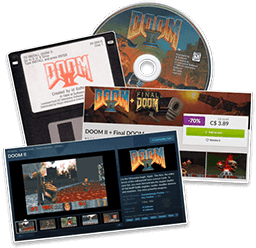
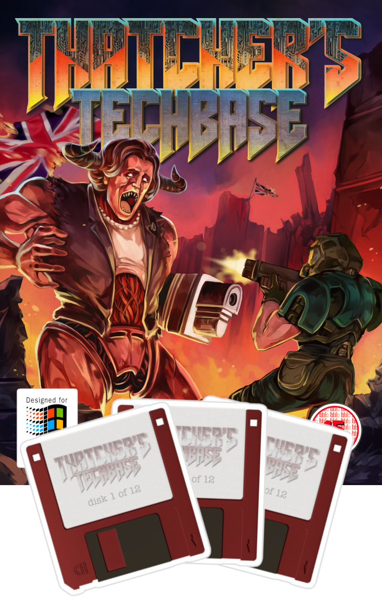
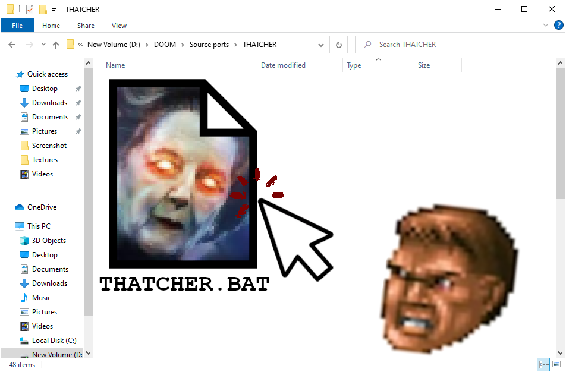
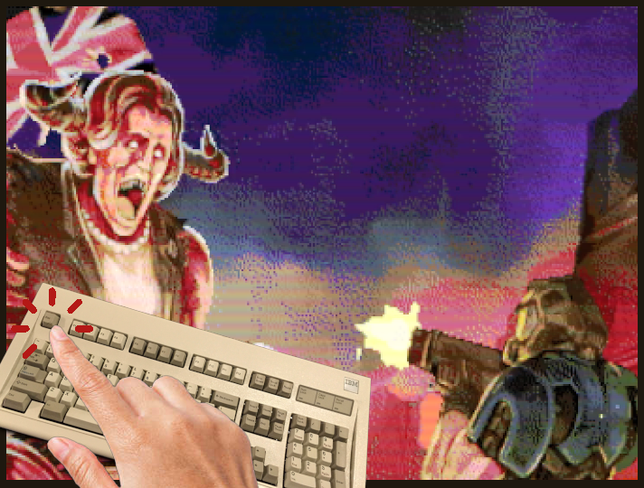
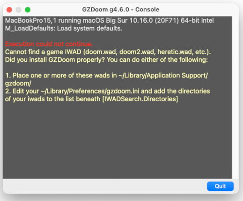
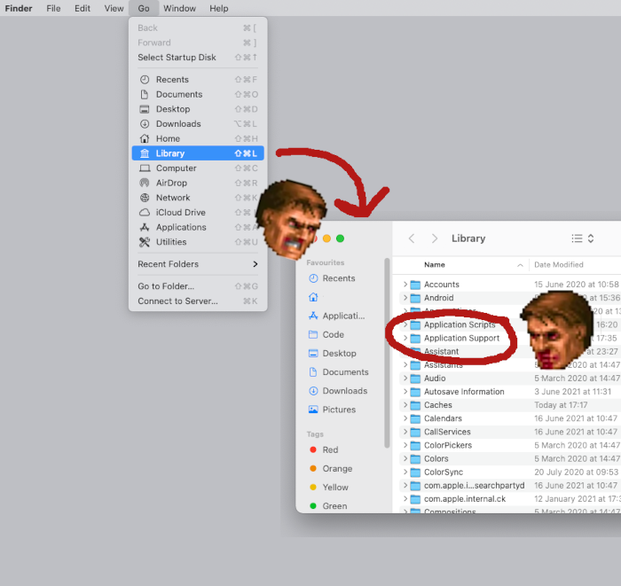
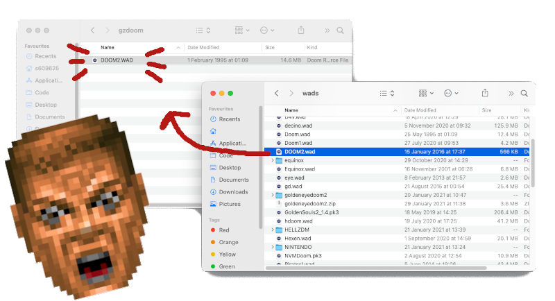
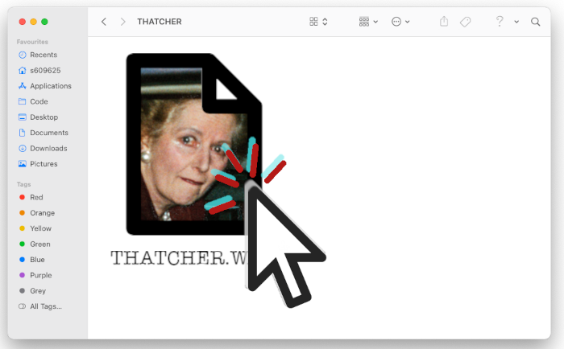
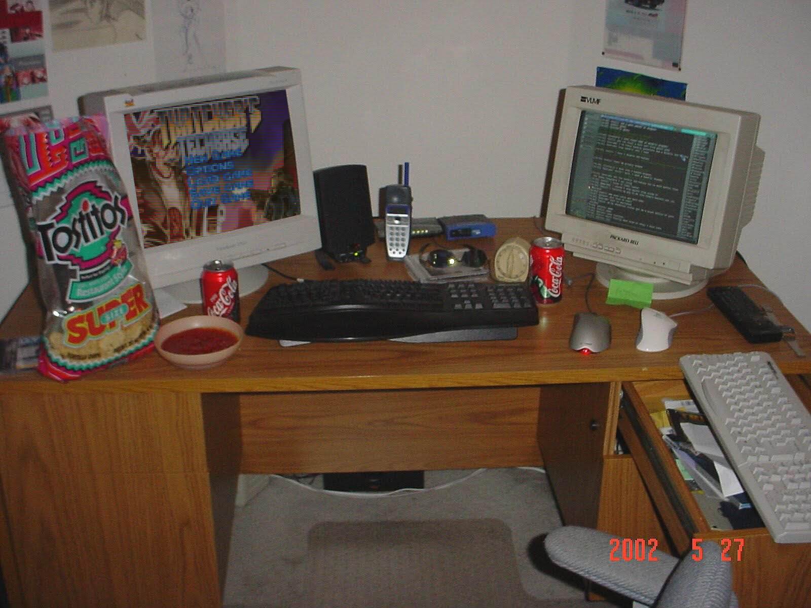

EXCITING 2024 UPDATE!
THATCHER'S TECHBASE: ARCADE EDITION is now available to play in
Bethesda's new
DOOM + DOOM II
release for PC, Xbox Series X|S and PlayStation 4/5!
To play the game:
-
Purchase and install DOOM + DOOM II on your device of
choice
-
Go to the “Mods” section within DOOM or
DOOM II
-
Use the “Browse” feature to find THATCHER'S TECHBASE: ARCADE
EDITION
Don't want to play the game this way? Check out the instructions
below:
ALREADY KNOW HOW TO PLAY DOOM WADs?
THATCHERCADE.wad is a
Boom-compatible pwad for DOOM II, and you can download
it
here (v2.1).
Tested on PRBoom*, DSDA-Doom, ZDoom and GZDoom.
(PRBoom players please note - this wad is best enjoyed with
PrBoom+ 2.6.1, as I've used a UMAPINFO lump to add some extra flavour to
the game.)

EVERYONE ELSE - BEFORE YOU BEGIN!
THATCHER'S TECHBASE is a game mod that uses the classic
video game DOOM 2 (1994) as a base. As such, a copy of
the file 'DOOM2.wad' is required in order to play.
Legally, I am not allowed to give you that file. I don't want
to get sued - Bethesda has access to Robert Trump's $66.6
million legal team, and 3D: Doom Daddy Digital does not!
If you own a copy of Doom 2 for MS-DOS, Windows, Mac OS, Sega
Saturn, Game Boy Advance, Tapwave Zodiac, N-Gage, Android,
iOS, Xbox, Xbox 360, Xbox One, Xbox Series S, Xbox Series X,
Nintendo Switch, PlayStation, PlayStation 3, PlayStation 4 or
PlayStation 5, then you legally have a license for the file
'doom2.wad' - but you'll need to find a copy of it yourself.
Consider it part of the gameplay experience!
If you cannot find DOOM2.wad anywhere in the
archives of the internet, then you can always buy DOOM 2 again on
Steam,
GOG.com
or
the Microsoft Store
- these versions of the game contain the file you'll need. Got
Microsoft Game Pass? You could 'borrow' the file from its
installation directory! Is that legal? I'm not sure!
THATCHERCADE.wad, the
other file you'll need, is completely free to download! You
can get it by clicking on the link or icon on this page.
Once you have acquired a copy of DOOM2.wad and a copy of
THATCHERCADE.wad, think carefully about what operating system
you use and proceed to the appropriate next step...
- WINDOWS
- MAC
- LINUX
- ANDROID
- NINTENDO 3DS
- NINTENDO WII
- EVERYTHING ELSE

WINDOWS 95, 98, NT, ME, XP, Vista, 7 and 10
AN OLD-SCHOOL EXPERIENCE?
Want to play
THATCHER'S TECHBASE like it's 1994, and have
it run on almost any computer¹? Happy to play with a keyboard
and mouse?
I recommend downloading
this. Once you've downloaded
THATCHERCADE.ZIP, extract it to a folder and open it up. Then
add DOOM2.wad and THATCHER.wad to the folder...

And double-click on THATCHER.bat in the same folder to run the
game! Easy!

❗❗❗ Stuck on the splash screen? Try hitting the
ESC key!

Now you're all good to go! Enjoy
THATCHER'S TECHBASE, and
have fun!
¹ (pregnancy tests, smart watches and graphics calculators
not included)
NEW-AGE ACTION! (FOR WINDOWS XP USERS AND ABOVE)
Lucky enough to own a computer or laptop that can run Windows XP
(or above) and want a more user-friendly port of DOOM? You can
grab
GZDoom or
ZDoom, a source port
that supports the latest mods and wads and lets you use
your very own gamepad!
Once you've downloaded G/ZDoom, extract the folder and add your
DOOM2.wad and THATCHERCADE.wad files to the directory, just as
above, and then double-click THATCHERCADE.wad (or drag it onto
gzdoom.exe) to play! Have fun!
 BEWARE!
BEWARE! By default, GZDoom enables features like texture
filtering, fully-3D aiming and a scaled HUD - things that
weren't a part of the original DOOM experience. If you wanna
play like that, it's no problem! But do be aware that you may
need to
some tinkering
with your new GZDoom installation to make it nice and crispy.
Mac OS, OS X
If you'd like to play THATCHER' TECHBASE on OS X,
download GZDoom!
(For people on really old versions of OS X, you can
still play the game using
ZDoom - it's
available on the same webpage!)
Once you've downloaded and installed G/ZDoom, you'll probably
get a message that looks like this:

To fix this, open up your
Library -> Application Support folder in OS X:

Open up the gzdoom folder* inside
Application Support, and then drag your
DOOM2.WAD file into the folder:

Almost there! Now that you're ready to go, just locate
THATCHERCADE.wad and
double-click it to run THATCHER'S TECHBASE!

Have fun!
* Can't find a 'GZDoom' folder in Application Support? If you
create it yourself and put DOOM2.WAD in there, GZDoom should
be able to find it.

LINUX
Seriously?
If you'd like to play THATCHER'S TECHBASE on Linux, you
can install
PRBoom for Linux and UNIX Systems,
GZDoom for Ubuntu,
or compile it directly from
the source code.
PRBoom
To run
THATCHER'S TECHBASE with PRBoom, use the following
command:
prboom -iwad DOOM2.wad -file THATCHERCADE.wad
GZDoom
For GZDoom, the OS X instructions should apply... but I don't
really know! If you are using Linux, you probably know about
computers than I do and do not need my help!
ANDROID DEVICES
The easiest way to play THATCHER'S TECHBASE on an Android
phone or tablet is by getting
Delta Touch
from the Google Play Store. It's £/$2.49, but well worth the
investment. You'll be supporting a great app, a great
developer, and will gain the ability to play countless Doom
mods and wads from the past 28 years.
Once installed on your device, all you need to do is grab your
copy of the Doom2.wad and stick it in the "OpenTouch/Delta"
folder on your device's storage. Your copy of
THATCHERCADE.wad goes in
the "OpenTouch/Delta/Mods" folder.
Once you've done that, open Delta Touch on your Android device
and click on "DOOM2.WAD". Press the keyboard icon in the
bottom-right corner of the screen, choose the list icon, and
select THATCHERCADE.wad - from now on, clicking on Doom2.wad
will launch THATCHER'S TECHBASE!
NINTENDO 3DS
Seriously?!
Yes! That's right! Thanks to the magic of
PRBoom-3DS, it's possible to play THATCHER'S TECHBASE on the
Nintendo 3DS! Amazing! If you've got a
Homebrew-enabled 3DS,
all you need to do is download
prboom-3ds
and stick
THATCHERCADE.wad in the
installation folder on your Nintendo 3DS's SD card! Boot up
PRBoom-3DS, choose THATCHERCADE.wad, and you're good to
go!
You'll need doom2.wad, too, of course.
Nintendo Wii
Seriously?!
Yes! That's right! Thanks to the magic of
WiiDoom, it's
possible to play THATCHER'S TECHBASE on the Nintendo
Wii! Amazing! If you've got a
Homebrew-enabled Wii,
all you need to do is download
WiiDoom and
stick THATCHERCADE.wad in
the installation folder on your Wii's SD card! Boot up
WiiDoom, choose THATCHERCADE.wad, and you're good to
go!
You'll need doom2.wad, too, of course.
EVERYTHING ELSE
One of the coolest things about Doom is that it can run on
anything.
THATCHER'S TECHBASE can't run on anything.
I did a pretty crappy job of making it - but it can run on a
lot of things. As a Boom-compatible Doom WAD, Thatcher's
Techbase should be runnable on any console that has
Boom-compatible source port, such as the Wii U, Nintendo DS,
PlayStation Portable or PlayStation Vita. Just stick "(device)
prboom port" into Google and you may be pleasantly
surprised!
Please let me know if you get the game running on anything
interesting, or are having issues getting it working. I'm
happy to help.
{kind=link}
{kind=link}
{kind=link}
{kind=link}
{kind=link}
{kind=link}
{kind=link}